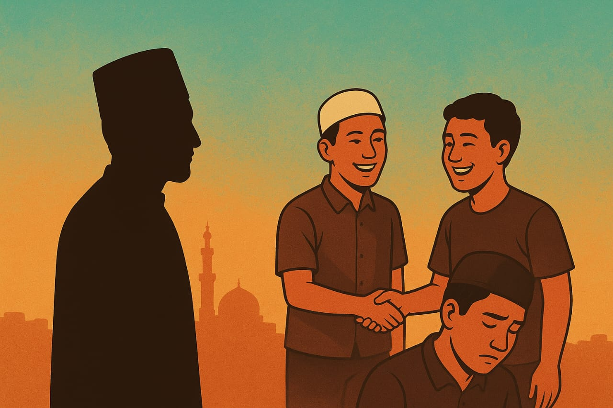

Mesir, negeri yang menjadi kiblat ilmu islam di dunia, selalu menjadi impian bagi banyak santri di tanah air. Di sinilah para penuntut ilmu datang merantau dengan membawa harapan besar: mencari pengetahuan, memperdalam agama, dan kelak pulang membawa cahaya bagi umat. Bahkan negeri ini memiliki banyak nama istimewa yang masyhur—Bumi Kinanah, Tanah Anbiya’, Negeri Seribu Ulama, dan lain sebagainya. Namun, di balik segala keistimewaan dan semarak kehidupan mahasiswa asing di negeri ini, ada kenyataan yang mulai mengusik.
Ada yang berubah di udara Kairo akhir-akhir ini, bukan karena musim dingin yang akan tiba. Entah apa, tapi rasanya berbeda. Suara klakson tramco, tuk-tuk yang melawan arus, hiruk-pikuk padatnya jalanan Darrasah, antrian ijroat di syu’un—semuanya masih sama, tapi ada sesuatu yang hilang di antara kita: rasa segan, rasa malu, bahkan harga diri juga status sebagai mahasiswa Al-Azhar.
Menurunnya etika dan moral di kalangan sebagian masisir ini merupakan fenomena yang bukan lagi sekadar cerita bisik-bisik atau berita burung. Ia menjadi nyata, terasa, dan bahkan terkenal hingga mahasiswa di negara lainnya. Ada yang kehilangan kehormatan dirinya, ada yang berani melangkahi batas adab yang dulu dijaga ketat di pondok, bahkan lebih mirisnya ketika ada kasus yang datang dari sesama mahasiswa Indonesia. Jika kita tarik ulur ke kepribadian masisir—yang dulu malu menatap lawan jenis, kini tanpa ragu saling tersenyum manis. Yang dulu takut berkata dusta dan berbuat dosa, kini pandai mencari beribu alasan bahkan tertelan masa. Yang dulu hati-hati menjaga marwah, kini kadang abai pada muruah.
Miris rasanya, ketika negeri yang seharusnya menjadi tempat menimba ilmu dan menempa jiwa justru berubah menjadi ruang ujian yang menyingkap aib sendiri. Bukan satu dua kasus, tapi cukup banyak kasus viral untuk membuat kita menunduk malu. Pertanyaannya, apa yang sebenarnya sedang terjadi?
Kita datang ke Mesir dengan identitas diri, bekal do’a orang tua, membawa nama tanah air, dengan niat suci untuk menuntut ilmu di tanah para ulama. Tapi di tengah derasnya arus pergaulan, sebagian dari kita mulai kehilangan arah jalan.
Mungkin benar, jumlah pelajar dan mahasiswa Indonesia di Mesir kini jika dibandingkan dengan tahun 90-an sangat berbeda jauh. Setiap tahun, gelombang pelajar dan mahasiswa baru datang membawa ekspektasi, semangat, dan mimpi yang besar. Tapi semakin besar jumlahnya, nyatanya semakin berkurang pula nilai-nilai etika dan moralnya. Kuantitas yang membengkak ternyata tidak diiringi dengan kualitas moral yang memadai. Banyak yang pandai berbicara tentang agama, tapi sulit menundukkan egonya. Banyak yang fasih menyebut adab, tapi gagal menjaganya ketika diuji dengan godaan dunia apalagi hawa nafsu.
Lalu muncul lagi berbagai pertanyaan, “Apakah karena jumlah Masisir yang kian hari makin membengkak, hingga kita sendiri sulit menata arah dan menjaga wibawa? Ataukah karena lingkungan kita terlalu bebas tapa adanya kontrol, membuat sebagian dari kita lupa bahwa kebebasan bukan berarti lepas dari tanggung jawab?”
Namun, tulisan ini bukan untuk menghakimi. Kita semua sedang belajar, dan setiap dari kita punya perjuangannya sendiri. Ada yang berjuang melawan rasa sepi, ada yang berjuang menahan diri dari godaan, ada pula yang berjuang untuk sekedar tetap istiqamah di tengah banyaknya ujian, atau bahkan banyak juga yang benar-benar serius mengambil banyak faedah dari negeri ini. Tidak semua Masisir kehilangan arah — masih banyak yang menjaga marwah, diam-diam menegur temannya dengan lembut, menutup aib orang lain, dan terus berusaha memperbaiki diri.
Mungkin di sanalah harapan itu masih menyala. Bahwa di tengah arus deras globalisasi, masih ada hati-hati yang sadar bahwa adab adalah cahaya. Bahwa malu bukan kelemahan, tapi kemuliaan. Bahwa menjaga nama baik bukan pencitraan, tapi bagian dari iman. Kita tak butuh banyak orang untuk mengubah keadaan — cukup satu hati yang sadar, lalu menularkan kepada sekitar. Karena perubahan besar selalu dimulai dari hati yang berani berkata, “Aku tidak mau menjadi bagian dari kerusakan.”
Dan mungkin inilah ujian paling nyata dari hidup di negeri ilmu: bukan sekadar kuat dalam membaca kitab, tapi kuat dalam menjaga hati dan adab. Bukan sekedar datang di ruang ujian, tapi juga harus mengamalkan. Sebab di tengah kebebasan hidup di negeri orang, batasan diri bisa dilanggar dengan gampang. Tidak ada yang menegur, tidak ada yang melihat — sampai akhirnya seseorang kehilangan rasa malu. Padahal kata Rasulullah SAW, “Jika engkau tidak malu, maka lakukanlah sesukamu.” Malu adalah benteng, dan ketika benteng itu runtuh, semuanya bisa hilang.
Kita bukan siapa-siapa di negeri ini, selain tamu ilmu. Alangkah baiknya kita menjadi cerminan akhlak Azhari, bukan potret perusak agama Ilahi. Sebab kehormatan seorang penuntut ilmu bukan ditentukan oleh seberapa banyak kitab yang ia kuasai, tapi seberapa dalam ia menjaga adab dan bermanfaat bagi ibu pertiwi.
Menuntut ilmu di Al-Azhar adalah anugerah besar, dan juga tanggung jawab yang besar. Karena setiap langkah kita di negeri ini akan menjadi cermin bagi nama bangsa, dan lebih dari itu — cermin bagi Islam yang kita bawa. Sebelum kita menuntut perubahan besar pada orang lain, mari mulai dengan satu hal kecil: memperbaiki diri sendiri.
Maka sebelum kita menuntut kehormatan dari orang lain, jagalah dulu kehormatan diri sendiri. Sebelum kita menuntut kejujuran dari sesama, jadilah orang yang bisa dipercaya. Sebelum kita bicara tentang perbaikan umat, pastikan dulu kita bukan bagian dari kerusakan umat. Cukup sadar bahwa setiap tindakan kita punya nilai. Cukup peka bahwa ilmu tanpa akhlak, hanyalah kesombongan yang merusak. Dan cukup berani untuk berkata “tidak” ketika dunia mulai menggoda kita menjauh dari jalan yang lurus.
Mesir adalah negeri ilmu, tapi ia juga negeri ujian. Dan mungkin, di balik semua pelajaran yang kita dapat dari kitab, kuliah dan ilmu organisasi, pelajaran paling berharga yang sedang Allah ajarkan kepada kita adalah bagaimana menjaga diri di tengah banyaknya kebebasan dan cobaan. Semoga kita tidak hanya pulang membawa gelar dan ijazah, tapi juga membawa hati yang lebih bersih, adab yang lebih kokoh, dan nama baik yang tetap harum sebagai thalibul ‘ilm sejati.
← Kembali© 2025 IKADU MESIR. All Rights Reserved.